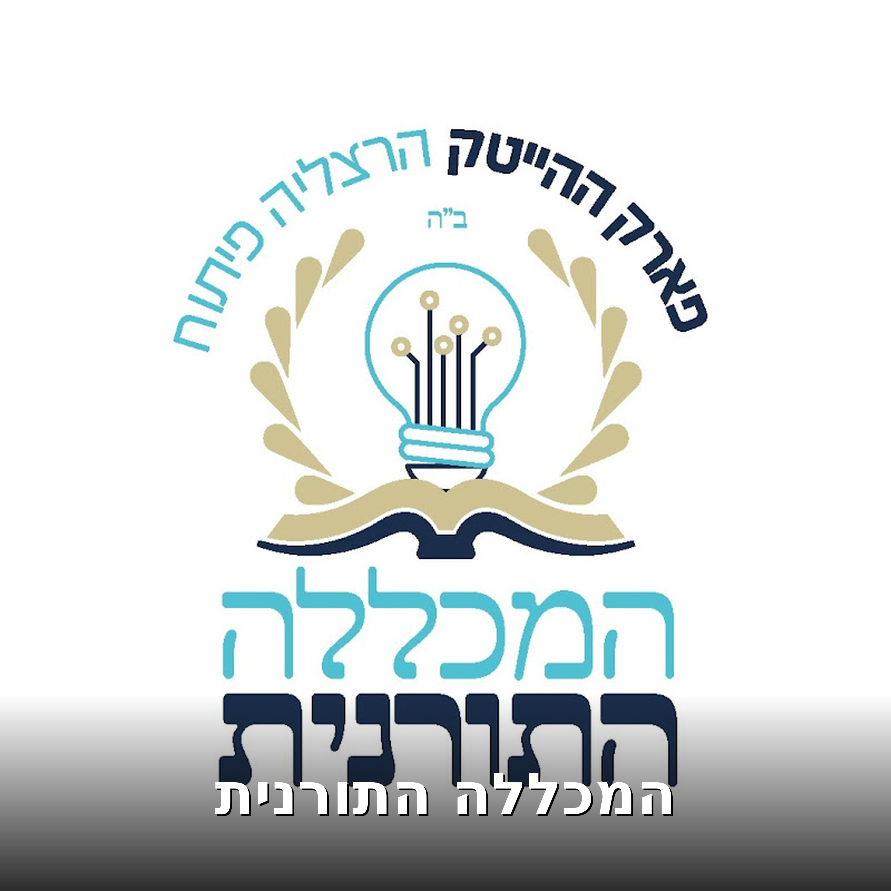

המכללה התורנית
Tous les épisodes

התוועדות י״ד אייר פסח שני עם הרב שמעון וייצהלר.
התוועדות פסח שני יום חמישי ערב י״ד אייר (30.4.26) בשעה 19:50 שמחה ולחיים בשפע! ולכבוד י״ג אייר – הילולת הרב״ח ר׳ ישראל ארי ליב – אחיו של כ״ק אדמו״ר מה״מ שליט״א עם הרב שמעון וייצהלר – ראש ישיבת תומכ

אור מקיף מול אור ממלא: להבין את הנוכחות האלוקית - הרב מנחם מיידנצ'יק, ט"ו אייר | פרק מ"ח
בשיעור זה בפרק מ"ח של ספר התניא, הרב מנחם מיידנצ'יק צולל אל עומק המושג "צמצום" ומסביר כיצד ייתכן שבורא אינסופי מחיה עולם מוגבל וגשמי. נקודות מרכזיות מהשיעור: הֶסְתֵּר וְהֶעְלֵם: מדוע האלוקות אינה ג

מחשבת הבורא היא מעשה בפועל: הסבר עמוק בתניא - הרב מנחם מיידנצ'יק, ט"ז אייר | פרק מ"ח
בשיעור זה בפרק מ"ח בספר התניא, הרב מנחם מיידנצ'יק צולל אל עומק המושגים "סובב כל עלמין" ו"ממלא כל עלמין". אנו לומדים כיצד האלוהות מחיה את העולם באופן תמידי, גם כאשר החיות נראית מצומצמת ונסתרת, כפי שהי

מדוע חייבים צמצומים כדי לברוא עולם? - הרב מנחם מיידנצ'יק, י"ד אייר | פרק מ"ח
בשיעור המיוחד לרגל י"ד אייר - פסח שני, פותח הרב מנחם מיידנצ'יק את פרק מ"ח בספר התניא. השיעור מדגיש את המסר העוצמתי של היום: "שום דבר לא אבוד" – תמיד ניתן לתקן ולהתקרב לקדוש ברוך הוא. במרכז הפרק, מסב

למה אחדות חשובה לקב״ה ? #חסידות #הרבי

אמונה חזקה בזמן חושך: כשהכל נשבר ולא יודעים מה יהיה מחר - הרב מנחם מיידנצ'יק, י"ב אייר | פרק מ"ו
אנו מסיימים את פרק מ"ו בספר התניא עם תובנות עמוקות על מהות הקשר של כל יהודי לקדוש ברוך הוא. נקודות מרכזיות מהשיעור: האלוקות שבתוכנו: כיצד כל יהודי הוא כלי לאלוקות, גם אם אינו מרגיש זאת בגלוי. ביאור

בן חורין אמיתי: מי הוא העבד ומי הוא החופשי לפי התניא - הרב מנחם מיידנצ'יק, י"ג אייר | פרק מ"ז
בשיעור פתיחה מיוחד לפרק מ"ז בספר התניא, הרב מנחם מיידנצ'יק לוקח אותנו למסע של חירות אמיתית. מה בשיעור? חוויה יומיומית: מדוע בכל דור ודור ובכל יום ויום חייב אדם לראות את עצמו כאילו הוא יצא ממצרים? הג

שולחן ערוך אדה״ז ומנהג הרבי - קציצת הציפורניים לכבוד שבת
מעשה מלך״ פרק 2 - הלכות שבת ומנהגי הרבי מיליובאוויטש שליט״א מלך המשיח.

מדוע אנחנו לא מרגישים את הקב"ה בכל מצווה — והאמת שמאחורי זה | הרב מנחם מיידנצ'יק, י"א אייר | פרק מו
בשיעור המרתק של היום בפרק מו בספר התניא, הרב מנחם מיידנצ'יק מעמיק במשמעות הביטוי "אֲשֶׁר קִדְּשָׁנוּ ...

שולחן ערוך אדה״ז ומנהג הרבי - תספורת לכבוד שבת
מעשה מלך״ פרק 1 - הלכות שבת ומנהגי הרבי מיליובאוויטש שליט״א מלך המשיח.

מי הכי אוהב אותנו בעולם? - הרב מנחם מיידנצ'יק, י' אייר אדר | פרק מ"ו
מי באמת הכי דואג לנו בעולם? בשיעור המרתק של היום (י" אייר), הרב מנחם מיידנצ'יק צולל אל עומק פרק מ"ו בספר התניא ומגלה לנו את עוצמת האהבה ...

פסח שני - אין דבר אבוד! #חסידות #אופטימיות #הרב_מנחם_מיידנציק

הרבי מליובאוויטש חי וקיים - ההסבר לכך
גאולה ומשיח שיעור 55, כ״ח שבט, איפה אנחנו עומדים בדרך לגאולה בית חב"ד אזוה"ת הרצליה פיתוח.

חשיבות ההכרזה - יחי אדונינו
גאולה ומשיח שיעור 54, כ״ה שבט, איפה אנחנו עומדים בדרך לגאולה בית חב"ד אזוה"ת הרצליה פיתוח.

הרבי מליובאוויטש - מלך המשיח
גאולה ומשיח שיעור 53, כ״ד שבט, איפה אנחנו עומדים בדרך לגאולה בית חב"ד אזוה"ת הרצליה פיתוח.

אהבה חוזרת: כך תנצחו את כל המניעות בעבודת השם - הרב מנחם מיידנצ'יק, ט' אייר | פרק מ"ו
בשיעור זה אנו פותחים את פרק מ"ו בספר התניא, שבו אדמו"ר הזקן מתווה דרך חדשה, ישרה וקרובה מאוד לעורר את האהבה המסותרת שבליבו של כל ...

לעורר את הלב: כוחה של מידת הרחמים באהבת השם - הרב מנחם מיידנצ'יק, ח' באייר | פרק מ"ה
בשיעור זה (ח' באייר), הרב מנחם מיידנצ'יק מעמיק ביסודות עבודת השם מתוך ספר התניא (פרק מ"ה), ומתמקד בכוחה של מידת הרחמים. השיעור מסביר ...

עם ישראל כבר עשו תשובה
גאולה ומשיח שיעור 47, טו שבט, איפה אנחנו עומדים בדרך לגאולה בית חב"ד אזוה"ת הרצליה פיתוח

התוועדות ראש חודש אדר - בית חב״ד אזוה״ת הרצליה

מה החלומות שלך אומרים עליך? - הרב מנחם מיידנצ'יק, ל' שבט | פרק כ"ט
איך לפתוח לב אטום ולנצח את הטמטום? | הרב מנחם מיידנצ'יק, ל' שבט | פרק כ"ט מרגישים שהשכל מבין אבל הלב נשאר אדיש? בשיעור היום, הרב מנחם מיידנצ'יק מסביר כיצד להפוך ל"בעלי חשבון" רוחניים כדי לשבור את "ט

סוד הלב הנשבר והשמחה האמיתית - הרב מנחם מיידנצ'יק, כ"ט שבט | פרק כ"ט
איך לפתוח לב אטום ולנצח את הטמטום? | שיעור תניא יומי - כ"ט שבט מרגישים שהשכל מבין אבל הלב נשאר אדיש? בשיעור היום אנחנו צוללים לעומק פרק כ"ט בספר התניא, ומגלים את הדרך המעשית לשבור את "טמטום הלב". בש

איך רואים שהעולם התברר ?
גאולה ומשיח שיעור 49, יז שבט, איפה אנחנו עומדים בדרך לגאולה בית חב"ד אזוה"ת הרצליה פיתוח

נסתיימו הבירורים בגלות, עם ישראל - קומה אחת שלמה
גאולה ומשיח שיעור 48, טז שבט, איפה אנחנו עומדים בדרך לגאולה בית חב"ד אזוה"ת הרצליה פיתוח

איך לפתוח לב אטום ולנצח את הטמטום - הרב מנחם מיידנצ'יק, כ"ח שבט | פרק כ"ט
מרגישים שהלב "כאבן"? בשיעור המרתק של היום על פרק כ"ט בספר התניא, אנו צוללים לאחת הסוגיות הנפוצות בעבודת השם: טמטום הלב. לפעמים המוח מבין מצוין מה צריך לעשות, אבל הלב נשאר קר, אדיש ונטול התלהבות. אדמו

הדרך המעשית לשמחה וניקוי המחשבה מהעולם - הרב מנחם מיידנצ'יק, כ"ז שבט | פרק כ"ח, חלק ב
בשיעור של היום (כ"ז שבט) אנו מסיימים את פרק כ"ח בתניא ומקבלים מאדמו"ר הזקן את "ארגז הכלים" הסופי להתמודדות עם בלבולים בתפילה. אם הרגשתם פעם שהתפילה שלכם "לא שווה" בגלל שצצו לכם מחשבות זרות – השיעור הז

למה המחשבות הזרות באות דווקא בתפילה? - הרב מנחם מיידנצ'יק, כ"ו שבט | פרק כ"ח, חלק א
📖 למה המחשבות הזרות באות דווקא בתפילה? | תניא כ"ו שבט, פרק כ"ח מרגישים שדווקא כשאתם עוצמים עיניים להתפלל, כל העולם נכנס לכם לראש? אתם לא לבד. בשיעור היום אנו פותחים את פרק כ"ח בספר התניא, וצוללים לאח

הסוד של דחיית סיפוקים וכיבוש היצר - הרב מנחם מיידנצ'יק, כ"ה בשבט | פרק כ"ז
הסוד של דחיית סיפוקים וכיבוש היצר, כ"ה בשבט | פרק כ"ז איך הופכים פעולות פשוטות כמו אכילה או דיבור למקור של קדושה? בשיעור הסיום של פרק כ"ז בתניא, נגלה את כוחה של ה**"אתכפיא"** – היכולת לדחות סיפוקים ג

למה הדור שלנו מוכן לגאולה - משל מננס על גבי ענק
גאולה ומשיח שיעור 46, יד שבט, איפה אנחנו עומדים בדרך לגאולה בית חב"ד אזוה"ת הרצליה פיתוח

הסוד להיות שמחים גם כשיש התמודדות - הרב מנחם מיידנצ'יק, כ"ד בשבט, חלק ב | פרק כ"ז
בשיעור זה אנו ממשיכים להעמיק בפרק כ"ז בספר התניא, ועוסקים באחד היסודות החשובים ביותר לעבודת השם בשמחה: ההבנה שהתמודדות עם מחשבות זרות והרהורים אינה סימן לכישלון, אלא הזדמנות ליצור נחת רוח עצום למעלה.

די לאגו, כן לשמחה: איך להכיר מקומנו - הרב מנחם מיידנצ'יק, כ"ג בשבט, חלק א | פרק כ"ז
בשיעור של היום (כ"ג בשבט) אנחנו צוללים אל תוך פרק כ"ז בספר התניא, פרק שנותן לנו כלים מעשיים וזווית ראייה חדשה על המלחמה היומיומית של כל אחד מאיתנו – המחשבות הזרות. מה תלמדו בשיעור? מאיפה זה בא? למה

מה עושים עם עצבות ממצב רוחני - הרב מנחם מיידנצ'יק, כ"ב שבט, חלק ג | פרק כ"ו
היום, כ"ב בשבט, אנו מעמיקים בפרק כ"ו בספר התניא ולומדים את אחד היסודות החשובים בעבודת השם: איך מתמודדים עם עצבות שמגיעה כביכול מסיבות "רוחניות"? לפעמים היצר הרע מנסה להפיל אותנו לעצבות ודאגה דווקא דר

הרבי מודיע - סיימנו את העבודה בגלות !
גאולה ומשיח שיעור 45, יא שבט, איפה אנחנו עומדים בדרך לגאולה בית חב"ד אזוה"ת הרצליה פיתוח

שני אלפים ימות המשיח
גאולה ומשיח שיעור 44, ט שבט איפה אנחנו עומדים בדרך לגאולה בית חב״ד אזוה״ת הרצליה פיתוח

העצה לשמחה בייסורים גשמיים - הרב מנחם מיידנצ'יק, כ"א שבט, חלק ב | פרק כ"ו
בשיעור זה אנו ממשיכים להעמיק בפרק כ"ו בספר התניא, ועוסקים באחת השאלות המורכבות ביותר: איך ניתן לשמור על שמחה גם כשמתמודדים עם קשיים גשמיים בפרנסה, בבריאות או בזוגיות? השיעור מסביר את מאמר חז"ל "כשם ש

סוד הניצחון: שמחה מול עצבות תניא - הרב מנחם מיידנצ'יק, כ' שבט, חלק א | פרק כ"ו
שיעור מרתק בספר התניא – פרק כ"ו בשיעור זה נצלול אל תוך אחד הפרקים היסודיים והחשובים ביותר בספר התניא (פרק כ"ו), בו אדמו"ר הזקן מלמד אותנו איך מנצחים במלחמה הפנימית מול היצר הרע. מה נלמד בשיעור? משל

מאהבה מסותרת לחיבור גלוי: המפתח לניצחון על היצר | פרק כ"ה
בשיעור זה אנו מסיימים בשמחה ובטוב לבב את פרק כ"ה בספר התניא. נלמד על "האהבה המסותרת" הקיימת בליבו של כל יהודי כירושה מאבותינו, ואיך היא מאפשרת לנו להתגבר על קשיים ולקיים מצוות מתוך מסירות נפש. בין הנו

מלחמה ביסוד העפר: איך לקום כמו ארי לעבודת השם - הרב מנחם מיידנצ'יק, י"ח שבט, חלק ב | פרק כ"ה
מה המנוע שדוחף אותנו לעשות טוב? בשיעור של היום (י"ח שבט), אנחנו מעמיקים בפרק כ"ה בספר התניא. אם בשיעורים הקודמים למדנו על הכוח למסור את הנפש בבחינת "סור מרע", היום אנחנו לומדים איך לרתום את אותה עוצמ

סיכום חלק ב - הגאולה ע״פ תורת החסידות
גאולה ומשיח שיעור 43, ח שבט, גאולה ומשיח ע״פ פנימיות התורה, תניא פרק לו׳ - לז׳ בית חב"ד אזוה"ת הרצליה פיתוח

הכוח המסתורי של האהבה המסותרת בכל יהודי - הרב מנחם מיידנצ'יק, י"ז שבט, חלק א | פרק כ"ה
בשיעור זה אנו צוללים אל תוך פרק כ"ה בספר התניא, הפרק שחותם את המהלך שהחל בפרק י"ח. איך ייתכן שהתורה מעידה ש"קרוב אליך הדבר מאוד", בזמן שעבודת ה' נראית לעיתים כה רחוקה וקשה? אדמו"ר הזקן מגלה לנו את ה"

חומרת השבת מול עבודה זרה - הרב מנחם מיידנצ'יק, ט"ז שבט, חלק ג | פרק כ"ד
שיעור תניא יומי - יום שלישי ט"ז שבט מסיימים את פרק כ"ד מה בשיעור? שבת מול עבודה זרה: מדוע פיקוח נפש דוחה שבת אך לא דוחה עבודה זרה, למרות ששבת שקולה כנגד כל התורה? מהות העונש: המטרה האמיתית של העונשי

בכל דרכך דעהו

סיכום - הגאולה ע״פ תורת החסידות
גאולה ומשיח שיעור 42, ד שבט, גאולה ומשיח ע״פ פנימיות התורה, תניא פרק לו׳ - לז׳ בית חב"ד אזוה"ת הרצליה פיתוח

עשיר ועני בחסידות

הסוד לניצחון על "רוח השטות" - הרב מנחם מיידנצ'יק, ט"ו בשבט, חלק ב | פרק כ"ד
מוזמנים להצטרף לשיעור תניא יומי קצר ועוצמתי ליום שני, ט"ו בשבט. בשיעור היום אנחנו ממשיכים להעמיק בפרק כ"ד ומגלים את האמת המטלטלת: למה כל עבירה, אפילו הקלה ביותר, מנתקת אותנו מהקדוש ברוך הוא יותר מהקלי

שהתורה מול מצווה - מה גובר ?
גאולה ומשיח שיעור 40, ב שבט, גאולה ומשיח ע״פ פנימיות התורה, תניא פרק לו׳ - לז׳ בית חב"ד אזוה"ת הרצליה פיתוח

קורא בתורה - אתה קורא לקב״ה לבוא אליך
גאולה ומשיח שיעור 41, ג שבט, גאולה ומשיח ע״פ פנימיות התורה, תניא פרק לו׳ - לז׳ בית חב"ד אזוה"ת הרצליה פיתוח

עבירה יותר גרוע מהצד האחר - הרב מנחם מיידנצ'יק, יד' שבט, חלק א | פרק כ"ד
בשיעור זה נלמד פרק כ״ד בתניא, העוסק באהבה המסותרת שבכל יהודי, באחדות השם, ובמשמעות הרוחנית של עשרת הדיברות. מוסבר כיצד מצוות עשה ומצוות לא תעשה נובעות מ״אנוכי השם אלוקיך״ ו״לא יהיה לך״, ומה ההבדל בין

תורה או מצוות: מה מחבר אותנו יותר לקב"ה? - הרב מנחם מיידנצ'יק, יב׳ שבט | פרק כ"ג
האם ידעת שלימוד תורה יוצר חיבור עמוק יותר מאשר קיום מצוות מעשיות? בשיעור זה אנו צוללים אל תוך פרק כ"ג בספר התניא, בו מסביר אדמו"ר הזקן את ההבדל המהותי בין המצוות לבין לימוד התורה: המצוות כ"איברים": המ

תניא יומי י׳ שבט - איך מנצחים את האגו ומתחברים לפנימיות הרצון? - הרב מנחם מיידנצ'יק | תניא פרק כ"ב
בשיעור מיוחד לרגל יום ההילולה של הרבי הריי"צ ויום קבלת הנשיאות של הרבי מלך המשיח (י' שבט), אנחנו צוללים אל פרק כ"ב בספר התניא. מה תלמדו בשיעור? פנים מול אחוריים: מה ההבדל בין החיות האלוקית שמחיה את ה

״אם כסף תלווה את עמי״

התוועדות י׳ שבט תשפ״ו - הרב נדב כהן
בית חב״ד אזוה״ת הרצליה

הסוד של "אחוריים דקדושה" ואיך לנצח את הניסיונות - הרב מנחם מיידנצ'יק, ט׳ שבט, | פרק כ"ב
בשיעור זה אנו צוללים אל תוך פרק כ"ב בספר התניא, ומבינים את אחד המושגים העמוקים בחסידות: כיצד ייתכן שיש רע וקליפות בעולם שנברא על ידי הקדוש ברוך הוא? הרב מסביר את ההבדל בין "פנימיות הרצון" ל"חיצוניות

מטמוניות יוסף במצרים

תניא יומי ה׳ שבט - הרב מנחם מיידנצ׳יק | תניא פרק כ'
בשיעור היום אנו פותחים את פרק כ' בספר התניא, ומעמיקים ביסוד שמאפשר לכל יהודי לשמור מצוות בקלות: ההבנה שכל עבירה היא למעשה פירוד מהקדוש ברוך הוא. מה נלמד בשיעור? הצ'יפ הפנימי: למה יהודי מוכן למסור את

תניא יומי ז׳ שבט - הרב מנחם מיידנצ׳יק

הרב מנחם מיידנצ׳יק, ח׳ שבט | פרק כ"א
מה המטרה האמיתית של ה"הסתר פנים" בעולם? האם העולם באמת נפרד מהבורא? בשיעור היום אנחנו מסיימים את פרק כ"א בספר התניא ולומדים על הקשר המיוחד שבין הבורא לנבראים דרך משל הדיבור ומשל "לבוש הצב". בשיעור נ

המעלה בהמשכת אור אין סוף
גאולה ומשיח שיעור 39, א שבט, גאולה ומשיח ע״פ פנימיות התורה, תניא פרק לו׳ - לז׳ בית חב"ד אזוה"ת הרצליה פיתוח

להרגיש את האלוקות תמיד - הרב מנחם מיידנצ'יק, ד שבט | פרק י"ט
בשיעור זה אנו מסיימים את פרק י"ט בספר התניא. אדמו"ר הזקן מסביר כיצד בחינת החוכמה שבנפש, שהיא "אור אינסוף" ממש, נשארת טהורה ותמיד מחוברת לקדוש ברוך הוא. נלמד מדוע ברגע של ניסיון אמונה, גם מי שרחוק מרוח

להתפלל בשביל לאכול

ביטול בא מהחכמה - הרב מנחם מיידנצ׳יק, תניא יומי ג’ שבט
תניא יומי ג שבט (שנה פשוטה) אמצע פרק י״ט

תודעת שפע - חסידות בוקר

ניסיון העוני וניסיון העושר

המעלה הגדולה שיש דוקא בלימוד התורה בבירור נפש הבהמית
גאולה ומשיח שיעור 38, כט טבת, גאולה ומשיח ע״פ פנימיות התורה, תניא פרק לו׳ - לז׳ בית חב"ד אזוה"ת הרצליה פיתוח

למה הנשמה ירדה לעולם ב
גאולה ומשיח שיעור 36, כד טבת, גאולה ומשיח ע״פ פנימיות התורה, תניא פרק לו׳ - לז׳ בית חב"ד אזוה"ת הרצליה פיתוח

למה הנשמה ירדה לעולם א
גאולה ומשיח שיעור 35, כב' טבת, גאולה ומשיח ע״פ פנימיות התורה, תניא פרק לו׳ - לז׳ בית חב"ד אזוה"ת הרצליה פיתוח

המעלה הנפלאה במצוות צדקה בקירוב הגאולה
גאולה ומשיח שיעור 37, כה טבת, גאולה ומשיח ע״פ פנימיות התורה, תניא פרק לו׳ - לז׳ בית חב"ד אזוה"ת הרצליה פיתוח

כל הגילוים של הגאולה תלויים בנו
גאולה ומשיח שיעור 34, יט טבת, גאולה ומשיח ע״פ פנימיות התורה, תניא פרק לו׳ - לז׳ בית חב"ד אזוה"ת הרצליה פיתוח

ניסיון העשירות וניסיון העניות

מה יקרה שכל העולם יעלה לקדושה ?
גאולה ומשיח שיעור 33, חי טבת, גאולה ומשיח ע״פ פנימיות התורה, תניא פרק לו׳ - לז׳ בית חב"ד אזוה"ת הרצליה פיתוח

סגולה לפרנסה מהרבי

התחלקות רבבות נשמות ישראל לניצוצות פרטיים
גאולה ומשיח שיעור 32, יז טבת, גאולה ומשיח ע״פ פנימיות התורה, תניא פרק לו׳ - לז׳ בית חב"ד אזוה"ת הרצליה פיתוח

עניינם של תרי״ג מצוות בבירור האדם והעולם
גאולה ומשיח שיעור 31, טז טבת, גאולה ומשיח ע״פ פנימיות התורה, תניא פרק לו׳ - לז׳ בית חב"ד אזוה"ת הרצליה פיתוח

והריקותי לכם ברכה עד בלי די

שנותנים לאדם עשירות מלמעלה

רבי מכבד עשירים - חסידות בוקר

העלאת כל העולם כולו לקדושה
גאולה ומשיח שיעור 30, טו טבת, גאולה ומשיח ע״פ פנימיות התורה, תניא פרק לז׳ בית חב"ד אזוה"ת הרצליה פיתוח

בירור גשמיות העולם לקדושה
גאולה ומשיח שיעור 29, יב טבת, גאולה ומשיח ע״פ פנימיות התורה, תניא פרק לז׳ בית חב"ד אזוה"ת הרצליה פיתוח

תשובות של הרבי בענייני פרנסה - חסידות בוקר

איך להעלות את השפע ממצרים לקדושה- חסידות בוקר

תכלית בריאת העולם - הגאולה
גאולה ומשיח שיעור 22, ח"י כסלו, גאולה ומשיח ע״פ פנימיות התורה, תניא פרק לו׳ - לז׳ בית חב"ד אזוה"ת הרצליה פיתוח

בירור כוחות נפש הבהמית לקדושה
גאולה ומשיח שיעור 28, יא טבת, גאולה ומשיח ע״פ פנימיות התורה, תניא פרק לו׳ - לז׳ בית חב"ד אזוה"ת הרצליה פיתוח

בירור הדברים הגשמיים ע״י קיום המצוות
גאולה ומשיח שיעור 27, ט טבת, גאולה ומשיח ע״פ פנימיות התורה, תניא פרק לז׳ בית חב"ד אזוה"ת הרצליה פיתוח

המעלה בעבודה דווקא בדור שלנו
גאולה ומשיח שיעור 25, ד טבת, גאולה ומשיח ע״פ פנימיות התורה, תניא פרק לו׳ - לז׳ בית חב"ד אזוה"ת הרצליה פיתוח

המשכת אור אין סוף ע״י קיום מצווה
גאולה ומשיח שיעור 26, ח טבת, גאולה ומשיח ע״פ פנימיות התורה, תניא פרק לו׳ - לז׳ בית חב"ד אזוה"ת הרצליה פיתוח

איך מטהרים את האוויר? - חסידות בוקר
חסידות בוקר עם הרב פז שביט

חסידות בוקר - ברכת ה׳ היא תעשיר

המעלה בעבודה דווקא בזמן הגלות
גאולה ומשיח שיעור 24, ג טבת, גאולה ומשיח ע״פ פנימיות התורה, תניא פרק לו׳ - לז׳ בית חב"ד אזוה"ת הרצליה פיתוח

התגלות אלוקות לעיני בשר - כמו במתן תורה
גאולה ומשיח שיעור 23, ב' טבת, גאולה ומשיח ע״פ פנימיות התורה, תניא פרק לו׳ - לז׳ בית חב"ד אזוה"ת הרצליה פיתוח

התוועדות ה׳ טבת התשפ״ו - הרב איצ׳ה לוי
התוועדות ה׳ טבת התשפ״ו - הרב איצ׳ה לוי משפיע בקהילת חב״ד הרצליה בבית חב״ד אזוה״ת הרצליה

חסידות בוקר - הצלחה אלוקית
הרב פז שביט,יט׳ כסלו, מלוקט מתוך דברי הרבי מליובאוויטש

חסידות בוקר - המשך אגרת לי״ט כסלו
הרב פז שביט,חי׳ כסלו, מלוקט מתוך דברי הרבי מליובאוויטש

איך אפשרי שהקב״ה יתגלה בעולם הזה?
גאולה ומשיח שיעור 21, יז׳ כסלו, גאולה ומשיח ע״פ פנימיות התורה, תניא פרק לו׳ - לז׳ בית חב"ד אזוה"ת הרצליה פיתוח #אמונה #משיח #גאולה

חסידות בוקר - אגרת לי״ט כסלו
הרב פז שביט,יז׳ כסלו, מלוקט מתוך דברי הרבי מליובאוויטש

יתרון האור מן החושך
גאולה ומשיח שיעור 20, יד׳ כסלו, גאולה ומשיח ע״פ פנימיות התורה, תניא פרק לו׳ - לז׳ בית חב"ד אזוה"ת הרצליה פיתוח #אמונה #משיח #גאולה

חסידות בוקר - המסייע למצווה ראוי לברכה ?
הרב פז שביט,יד׳ כסלו, מלוקט מתוך דברי הרבי מליובאוויטש

למה דווקא דירה בתחנונים ?
גאולה ומשיח שיעור 19, יג׳ כסלו, גאולה ומשיח ע״פ פנימיות התורה, תניא פרק לו׳ - לז׳ בית חב"ד אזוה"ת הרצליה פיתוח #אמונה #משיח #גאולה

י״ט כסלו - הרב פז שביט

חסידות בוקר - כיצד מביאים את העולם לתכליתו ?
הרב פז שביט, יג כסלו, מלוקט מתוך דברי הרבי מליובאוויטש

חסידות בוקר - נחלה בלי מצרים
הרב פז שביט, יב׳ כסלו, מלוקט מתוך דברי הרבי מליובאוויטש

חסידות בוקר - איך נזכה לאשריך וטוב לך ?
הרב פז שביט, יא׳ כסלו, מלוקט מתוך דברי הרבי מליובאוויטש

מאיזה שבט אני? המשיח יגלה
גאולה ומשיח שיעור 11, כט חשון, שיעור בהלכות משיח ברמב"ם, פרקים יא-יב הלכות מלכים, ורמב"ם י'ג עיקרי האמונה בית חב"ד אזוה"ת הרצליה פיתוח #אמונה #משיח #גאולה

מתי יבוא אליהו?
גאולה ומשיח שיעור 10, כח חשון, שיעור בהלכות משיח ברמב"ם, פרקים יא-יב הלכות מלכים, ורמב"ם י'ג עיקרי האמונה בית חב"ד אזוה"ת הרצליה פיתוח #אמונה #משיח #גאולה

2 תקופות בימות המשיח
גאולה ומשיח שיעור 9, כז חשון, שיעור בהלכות משיח ברמב"ם, פרקים יא-יב הלכות מלכים, ורמב"ם י'ג עיקרי האמונה בית חב"ד אזוה"ת הרצליה פיתוח #אמונה #משיח #גאולה

החילוק בין משיחי שקר למשיח האמיתי - רמב"ם הלכות מלכים
גאולה ומשיח שיעור 8, כה חשון, שיעור בהלכות משיח ברמב"ם, פרקים יא-יב הלכות מלכים בית חב"ד אזוה"ת הרצליה פיתוח #אמונה #משיח #גאולה #רמבם

איך מזהים את מלך המשיח ב - רמב"ם הלכות מלכים
גאולה ומשיח שיעור 7, כב חשון, שיעור בהלכות משיח ברמב"ם, פרקים יא-יב הלכות מלכים בית חב"ד אזוה"ת הרצליה פיתוח #אמונה #משיח #גאולה #רמבם

איך מזהים את מלך המשיח א - רמב"ם הלכות מלכים
גאולה ומשיח שיעור 6, כא חשון, שיעור בהלכות משיח ברמב"ם, פרקים יא-יב הלכות מלכים בית חב"ד אזוה"ת הרצליה פיתוח #אמונה #משיח #גאולה #רמבם

למה ביאת משיח נחשבת אחד מעיקרי האמונה ?
גאולה ומשיח שיעור 5, כ חשון, שיעור בהלכות משיח ברמב"ם, פרקים יא-יב הלכות מלכים, ורמב"ם י'ג עיקרי האמונה בית חב"ד אזוה"ת הרצליה פיתוח #אמונה #משיח #גאולה

ראיות מהתורה לביאת משיח - חלק ב - רמב"ם הלכות מלכים
גאולה ומשיח שיעור 4, יט חשון, שיעור בהלכות משיח ברמב"ם, פרקים יא-יב הלכות מלכים ר' שלמה פבזנר בית חב"ד אזוה"ת הרצליה פיתוח #אמונה #משיח #גאולה

בתענוגים יש סדר והדרגה - קונטרס ומעיין מאמר א'
הסתת היצר הרע - קונטרס ומעיין, מאמר א' , פרק ב' - ר' שמואל גלפמן, כ' חשוון

הסתת היצר הרע - קונטרס ומעיין מאמר א'
הסתת היצר הרע - קונטרס ומעיין, מאמר א' , פרק א' - ר' שמואל גלפמן, יט' חשוון

ראיות מהתורה לביאת משיח - רמב"ם הלכות מלכים
גאולה ומשיח שיעור 3, טו חשון, שיעור בהלכות משיח ברמב"ם, פרקים יא-יב הלכות מלכים, ר' שלמה פבזנר, בית חב"ד אזוה"ת הרצליה פיתוח #אמונה #משיח #גאולה

לחכות לביאתו - רמב"ם הלכות מלכים
גאולה ומשיח שיעור 1, יג חשון, שיעור בהלכות משיח ברמב"ם, פרקים יא-יב הלכות מלכים, ר' שלמה פבזנר, בית חב"ד אזוה"ת הרצליה פיתוח #אמונה #משיח #גאולה

איך מאמינים בביאת משיח - רמב"ם הלכות מלכים
גאולה ומשיח שיעור 1, יג חשון, שיעור בהלכות משיח ברמב"ם, פרקים יא-יב הלכות מלכים, ר' שלמה פבזנר, בית חב"ד אזוה"ת הרצליה פיתוח #אמונה #משיח #גאולה

הוה גביר שיעור 15 אוצר עצות וסגולות לחיים מבורכים ומוצלחים
אוצר עצות וסגולות לחיים מבורכים ומוצלחים, מלוקט מסדרת ספרי האגרות קודש של הרבי מליובאוויטש

הוה גביר שיעור 14 אוצר עצות וסגולות לחיים מבורכים ומוצלחים
אוצר עצות וסגולות לחיים מבורכים ומוצלחים, מלוקט מסדרת ספרי האגרות קודש של הרבי מליובאוויטש

הוה גביר שיעור 13 אוצר עצות וסגולות לחיים מבורכים ומוצלחים
אוצר עצות וסגולות לחיים מבורכים ומוצלחים, מלוקט מסדרת ספרי האגרות קודש של הרבי מליובאוויטש

הוה גביר שיעור 12 אוצר עצות וסגולות לחיים מבורכים ומוצלחים
אוצר עצות וסגולות לחיים מבורכים ומוצלחים, מלוקט מסדרת ספרי האגרות קודש של הרבי מליובאוויטש

הוה גביר שיעור 11 אוצר עצות וסגולות לחיים מבורכים ומוצלחים
אוצר עצות וסגולות לחיים מבורכים ומוצלחים, מלוקט מסדרת ספרי האגרות קודש של הרבי מליובאוויטש

הוה גביר שיעור 10 אוצר עצות וסגולות לחיים מבורכים ומוצלחים
אוצר עצות וסגולות לחיים מבורכים ומוצלחים, מלוקט מסדרת ספרי האגרות קודש של הרבי מליובאוויטש

הוה גביר שיעור 09 אוצר עצות וסגולות לחיים מבורכים ומוצלחים
אוצר עצות וסגולות לחיים מבורכים ומוצלחים, מלוקט מסדרת ספרי האגרות קודש של הרבי מליובאוויטש

הוה גביר שיעור 08 אוצר עצות וסגולות לחיים מבורכים ומוצלחים
אוצר עצות וסגולות לחיים מבורכים ומוצלחים, מלוקט מסדרת ספרי האגרות קודש של הרבי מליובאוויטש

הוה גביר שיעור 07 אוצר עצות וסגולות לחיים מבורכים ומוצלחים
אוצר עצות וסגולות לחיים מבורכים ומוצלחים, מלוקט מסדרת ספרי האגרות קודש של הרבי מליובאוויטש

הוה גביר שיעור 06 אוצר עצות וסגולות לחיים מבורכים ומוצלחים
אוצר עצות וסגולות לחיים מבורכים ומוצלחים, מלוקט מסדרת ספרי האגרות קודש של הרבי מליובאוויטש

הוה גביר שיעור 05 אוצר עצות וסגולות לחיים מבורכים ומוצלחים
אוצר עצות וסגולות לחיים מבורכים ומוצלחים, מלוקט מסדרת ספרי האגרות קודש של הרבי מליובאוויטש

הוה גביר שיעור 04 אוצר עצות וסגולות לחיים מבורכים ומוצלחים
אוצר עצות וסגולות לחיים מבורכים ומוצלחים, מלוקט מסדרת ספרי האגרות קודש של הרבי מליובאוויטש

הוה גביר שיעור 03 אוצר עצות וסגולות לחיים מבורכים ומוצלחים
אוצר עצות וסגולות לחיים מבורכים ומוצלחים, מלוקט מסדרת ספרי האגרות קודש של הרבי מליובאוויטש

הוה גביר שיעור 02 אוצר עצות וסגולות לחיים מבורכים ומוצלחים
אוצר עצות וסגולות לחיים מבורכים ומוצלחים, מלוקט מסדרת ספרי האגרות קודש של הרבי מליובאוויטש

הוה גביר שיעור 01 אוצר עצות וסגולות לחיים מבורכים ומוצלחים
אוצר עצות וסגולות לחיים מבורכים ומוצלחים, מלוקט מסדרת ספרי האגרות קודש של הרבי מליובאוויטש